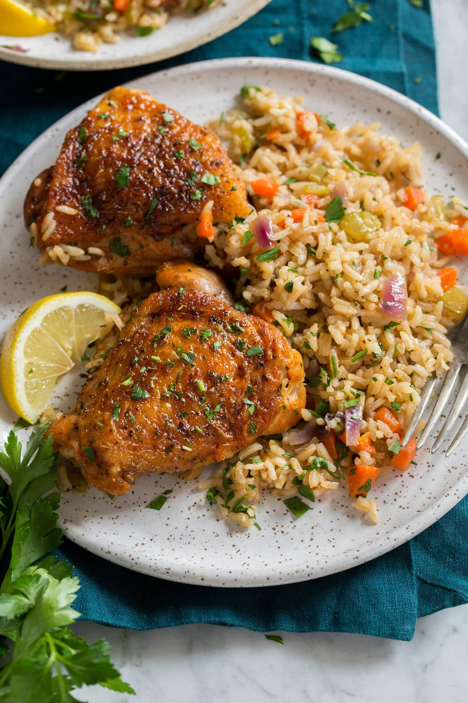

Rice and chicken

Description
This is a quintessential chicken dinner that's perfect for busy days and lazy days. It's a classic meal made with basic ingredients that's always set to satisfy!
Ingredients
- Chicken thighs
- Olive oil
- Salt and pepper
- Red onion
- Carrots
- Celery
- Garlic
- Low-sodium chicken broth
- Long grain white rice
- Lemon juice
- Italian seasoning
- Paprika
- Parsley
Steps
- Preheat oven to 400 degrees
- Heat olive oil a large oven safe pot over medium-high heat
- Dab thighs dry with paper towels, season both sides with salt and pepper
- Place thighs in pot skin side down, leaving space around each thigh. Let cook until slightly browned, about 3 - 4 minutes. Turn and continue and cook 2 - 3 minutes longer. Transfer to a plate
- Drain off most of the fat then return pot to medium-high heat. Add onions, carrots, and celery, saute 3 minutes. Add garlic and saute 1 minute longer
- Pour in chicken broth and lemon juice and bring mixture to a boil
- Meanwhile in a small bowl stir together Italian seasoning and paprika. Season both sides of chicken with seasoning
- Add rice into pot once broth reaches a boil, give it a quick stir. Remove from heat, place thighs on top of rice mixture. Cover pot with snug fitting oven safe lid
- Bake chicken and rice in pot until rice is tender and chicken is cooked through, about 35 minutes
- Remove thighs from rice, add parsley to rice and fluff with a fork. Serve warms
Back to the recipes